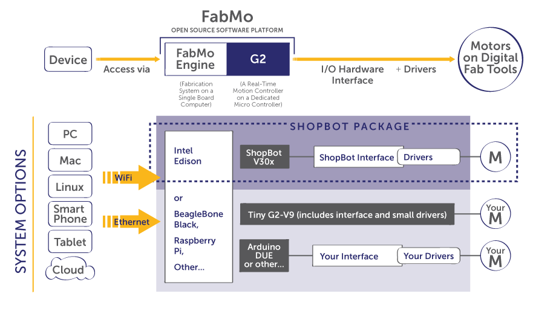
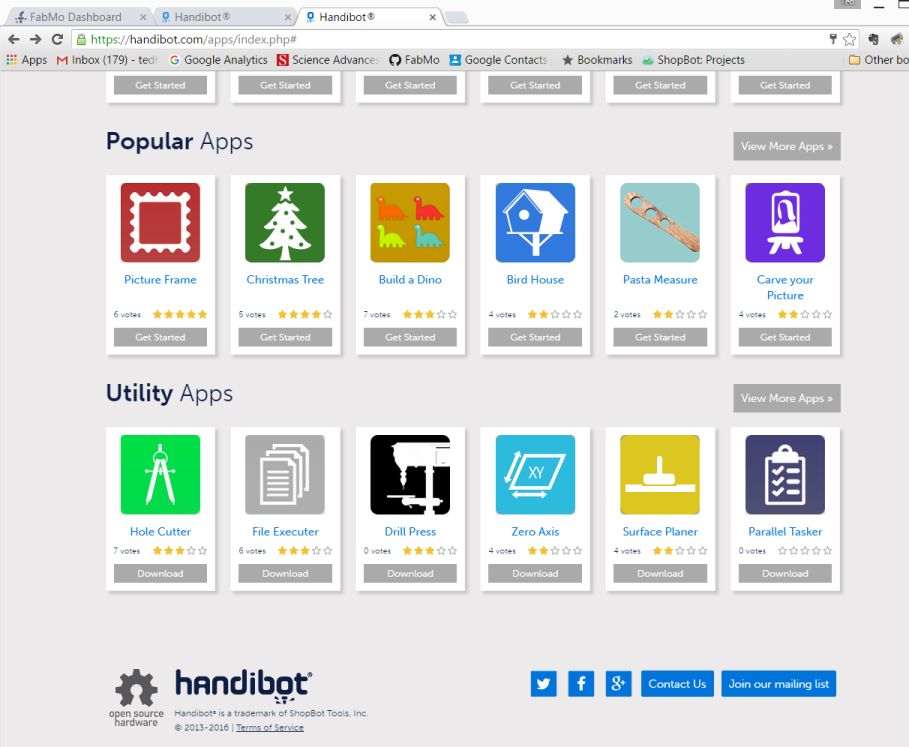

FabMo is an open-source, digital fabrication and motion platform of software and hardware. Originated by a small team at ShopBot Tools, the FabMo Platform encapsulates a powerful core motion system, G2, created by Synthetos (creators of TinyG). FabMo is available to be used and adapted by anyone, to run and manage every digital smart tool imaginable, today and tomorrow -- providing users a single, compelling interface for all their fabrication equipment.
FabMo offers digital-fabbers, developers, and OEMs 3 essential freedoms.
FabMo will link your network-enabled devices to your digital fab tool. Access a tool from your phone or via any computer. Control the tool or just monitor the action. Do it wirelessly, or hardwire with ethernet to achieve industrial robustness. Post job files from your cloud storage, or only use locally generated files. You have the freedom.
FabMo supports a wide range of digital-fab workflows from traditional CAD > CAM approaches to a variety of "app" types. Some apps will provide utility functions and carry out common jobs, others will produce complex digital-fab projects whose parameters can be customized by users. FabMo supports several motion languages including g-code and OpenSBP. Other languages may be added. Go FabMo to create, produce, and manufacture in ways that suit your style.
We're encouraging the development of a system that will meet the needs of the fabrication, motion, and robotics community and provide an open platform for shared innovation. Several development-system hardware options are available for hardware designers, and the software is organized to be modular and understandable. At the lowest level, advanced, fast, and smooth motion is provided by G2 - a real-time, motion system core running on a dedicated microcontroller. At higher levels, a FabMo SBC manages files, projects, and apps and links a tool to the world.
The first challenge is the CAD to CAM workflow for generating tool-path files. The difficulty of doing CAD and CAM creates a tough hurdle, particulary for simple projects or routine work. The second challenge is that running the files that are generated from CAM output is made complicated by proprietary or idiosyncratic tool languages and by tool interfaces having restrictive connectivity and little interoperability.
With the FabMo digital fabrication and motion platform, we introduce an approach to digital fabrication that opens new paths of use and frees access to tools. FabMo takes advantage of progress in microprocessors and microcontrollers, which now offer low-cost options for managing and driving digital fabrication equipment, of both additive and subtractive types. The FabMo "Engine" looks outward from a digital fab tool allowing access via wireless and wired routes, from almost any type of device, and utilizing multiple and expandable motion languages. It efficiently feeds the FabMo "Core" -- a low-level, real-time, high-performance motion-system producing graceful fabbing action.
FabMo links a fabrication tool to apps and projects. Such apps will make content created for digital fabrication more available and customizable to users' needs. FabMo supports links for managing cloud apps, projects, galleries, and accounts.
Diagram of FabMo. Top line shows the general model of FabMo for digital Fabrication -- the connection from a device in the world, to a tool's motion system, and the electronic and mechanical hardware that support it. The lower portion of the diagram shows the current ShopBot/Handibot instantiation of FabMo by way of detailed example, as well as other options available to developers and OEMs.
FabMo is based on two hardware components: 1) an SBC (single board computer) on which the "Engine" - interface, communications, and management systems - runs; and 2) a microprocessor the provides real-time environment for the "Core", G2, motion functions.
FabMo is a collection of software components and well-documented APIs. The FabMo Engine, running in linux on the tool's SBC, connects a digital fab tool to the world; handles local user needs; manages the flow of jobs to the real-time core.
Programmed primarily in javascript with node.js, the FabMo Engine serves up a contemporary, mobile-friendly web interface. Several base modules provide run-times for different digital-fab-tool path languages and serve as models for creating others.
More importantly, FabMo provides a framework for developing and hosting "apps" that will contribute a wide range of usability to digital fab tools. App Developer Resources include definitive and documented "example app" that serves as a template for app development as well as several more specific examples. Apps are written in the languages of the web (HTML, Javascript, Coffeescript, CSS, etc) so that as tools for the web grow, so do our tools for doing digital fabrication!
The FabMo "G2 Core" resides on the ARM microcontroller. It represents work of the Synthetos team. G2 is a sophisticated motion system: high speed (high step rates), advanced "S" shaped ramping for smooth and efficient accelerations and decelerations, all running in real time and not requiring fussing with PC timing functions or USB converters.

FabMo "Dashboard" Interface. Showing system apps (left panel), apps area, and Digital Read Out (DRO; optionally displayed on right).
Example "gallery" of Handibot "projects apps" ready for the FabMo "Dashboard". Ready-to-cut projects available from web galleries.
There are lots of good examples online of apps that use fabmo.js and the Handibot Dashboard - Choose one of interest and you can check it out here. (Note that when opened here they will open in your full browser and not the Dashboard.)
Open up our virtual FabMo Dashboard to see the look and feel of the interface and apps in action. This is just like running a real tool ...
Check out the API documentation for the details on making use of FabMo functionality in your own apps.
And there is always the FabMo project itself on GitHub. Code, apps, and resources. Join the community.

FabMo has been implemented for the Version 2 generation of Handibots. Handibot provides and example and test bed for demonstrating FabMo functionality and capabilities. Feel free to explore ...